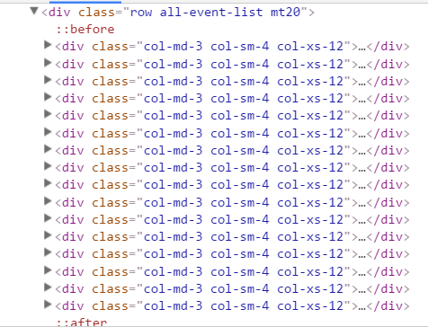
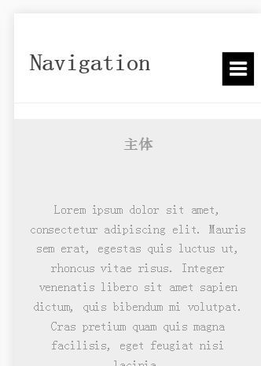
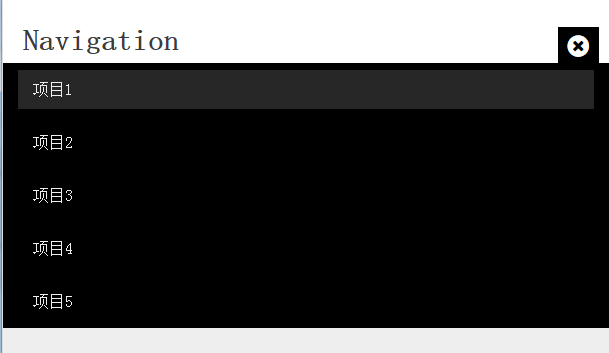

前言
第一次写页面是因为机缘巧合下听了一位新浪工作的前辈讲解的一个页面，用的就是bootstrap来构建响应式页面，由于我是突然加入听讲，前端的概念还不是很足，成堆的属性铺天盖地而来，导致跟不上节奏，硬着头皮给自己灌输这样的思想，很痛苦，但是当效果出来的时候，还是很开心的，毕竟传说中的框架，竟然这样就用上了，自那以后，好一段时间都在用bootstrap，直到有一天…
认识Bootstrap
2011年，twitter的“一小撮”工程师为了提高他们内部的分析和管理能力，用业余时间为他们的产品构建了一套易用、优雅、灵活、可扩展的前端工具集–BootStrap。Bootstrap由MARK OTTO和Jacob Thornton所设计和建立，在github上开源之后，迅速成为该站上最多人watch&fork的项目。大量工程师踊跃为该项目贡献代码，社区惊人地活跃，代码版本进化非常快速，官方文档质量极其高(可以说是优雅)，同时涌现了许多基于Bootstrap建设的网站：界面清新、简洁;要素排版利落大方。
那时写的是一个segmentfault站的活动页面，其中各个活动的排列就是基于bootstrap的响应式开发，在用户视口宽度大于 992 px 即使用电脑浏览页面时，活动页面一行显示4个，当用户的视口宽度缩小，直到小于 992 px (一般是ipad及大屏的电子设备)时，一行变成显示3个，继续缩小屏幕，当小于 768px 即用手机设备访问网页时，活动页面会自动变成一行显示一个活动页面，对不同的设备进行页面设计就是一种响应式网页设计
Bootstrap响应式实现
利用Bootstrap提供的框架搭建响应式
Bootstrap使用前需要在头部引入这样的一段代码：
|
|
为了手机用户也能浏览
|
|
Bootstrap的响应式是典型的基于移动优先设置的一套栅格系统，该系统通过一系列的行（row）与列（column）的组合构建整个栅格部分，最大列数12列。
| 超小屏幕 手机 (<768px) | 小屏幕 平板 (≥768px) | 中等屏幕 桌面显示器 (≥992px) | 大屏幕 大桌面显示器 (≥1200px) | |
|---|---|---|---|---|
| .container最大宽度 | 自动 | 750px | 970px | 1170px |
| 类前缀 | .col-xs- | .col-sm- | .col-md- | .col-lg- |
| 最大列宽 | 自动 | ~62px | ~81px | ~97px |
截取segmentfault中活动页面：

对照两个图我们可以看到row下的每个div设置了”.col-md-3 .col-sm-4 .col-xs-12”这样的类，翻译过来就是，我发了一个声明，在我这个装了这三个东西的下面，大屏幕电脑（.col-md-3）下，我只占3份（前面提到一共12份），反正电脑屏幕大，我只要3份就能保证我使用了，剩下九份你们分吧，下面剩下的11个兄弟就开始分，发现都是.col-md，好吧，我一行12个你们每个人要3份，那就一行排4吧，排满12份就下一行继续，这样下来电脑上就是一行4个，然后有人又换了平板看，然后我也已经声明了.col-sm-4，你屏幕变小了，我占个3份不够用啦，位置太小我的肚子都放不下了（自行理解为它里面的图片和内容之类的），所以我这次我要占4份，然后巴拉巴拉，所有东西就占个4份，一行就只能放三个了，以此类推，手机下就是一行一个了，这就是Bootstrap的响应式使用过程。
但是这是使用的过程啊，作为一个苦逼的前端人员，当然有必要知道甚至是掌握他的响应式是怎么实现的。
学习后做得一个小demo
Bootstrap响应式的实现
关于他的实现也很简单，最主要用到的就是媒体查询（Media Query），这是个好东西啊，很多响应式网站的设计也是基于媒体查询来做的，不过这里，我们只谈Bootstrap使用它的部分。
|
|
上面就是bootstrap使用媒体查询来确定设备宽度时，对.col-md-3 .col-sm-4 .col-xs-12进行百分比的流式栅格布局，同时我们也可以注意到对于.col-xs-12是没有进行媒体查询的，这也比较符合移动优先思想，对于页面的响应式设计，需要从移动页面开始设置，这样设计的所有样式都会先应用到移动设备上，然后设计里使用媒体查询，一步一步的增加对其他尺寸的设计。
Bootstrap导航栏设计
Bootstrap让人赞不绝口主要还是因为他对于网站的快速构建，以及设计的样式比较简介清新，让人可以很快的看到其中的效果，自从弄完了响应式页面后，我就沉浸在Bootstrap中，又捣鼓了它其他的功能，导航栏就是其中一个。（由于导航栏的样式实在是太多，所以我只能拿我做得demo中的样式来说）
Bootstrap 导航栏
导航对于一位前端人员来说并不陌生。可以说导航是一个网站重要的元素组件之一，可以便于用户查找网站所提供的各项功能服务。导航的制作方法也是千奇百怪，五花八门。Bootstrap内置了很多关于导航栏以及其中的下拉菜单栏的样式，有很多效果都能在其中看到，但是我们需要怎样去使用呢？
Bootstrap框架中制作导航条主要通过“.nav”样式。默认的“.nav”样式不提供默认的导航样式，必须附加另外一个样式才会有效，比如“nav-tabs”、“nav-pills”之类。比如下面就有一个tab导航条的例子，他的实现方法就是为ul标签加入.nav和nav-tabs两个类样式。
|
|
它的源码实现
|
|
同样的如果需要设置胶囊型的导航栏以及导航栏自适应，只需要设置对应的nav-pills nav-justified就能实现。很多样式在Bootstrap官网可以看到，也就不赘述。
接下来说个好玩的，跟前面的响应式一样，对于我最上面那个demo如果缩小屏幕的话，上面那些按钮是怎么做到缩小屏幕宽度后能够变成三道横线把菜单栏收缩呢，其实Bootstrap类里有对应的类，添加上能够很轻松的实现
|
|
只需要这几行代码简单的代码就能完成，再次突显bootstrap的便捷，适合上手，但是有点要注意，上面的data-target是需要指向你的原先导航栏的那个容器，里面写他对应的类或id，这里还需要把你的菜单栏放入collapse navbar-collapse中
那么对于这个导航条的手机端自适应菜单栏是怎么做到的呢？
移动端菜单栏代码实现
|
|
对于菜单栏的移动端实现核心还是在于响应式控制按钮的切换以及内容的显示与隐藏来达到不同客户端能平滑显示，不至于不和谐。
|
|
这样我们就能实现移动端菜单栏的响应式设计了


总结
这篇文章写的很敷衍，因为很多地方自己也没讲的很清楚，可能还是会用暂时还不会表达吧，不过对于Bootstrap是映象挺深的，毕竟是自己接触的第一个框架，所以有那么段时间一直在写，也通过这个框架的源码学习了很多关于媒体查询和响应式的设计。
在知乎看到很多人因为这个框架针对谁用闹得不可开交，很多人觉得这个框架开发的目的就是为了给非前端人士，以及后端人士能够迅速搭建一个美观好看并且功能全的网站，也获得了很多后端人士的赞同，不过作为一个前端码农，我觉得框架并不是限制，不能局限于框架，Bootstrap厉害之处不仅是它设计的大方，而是它的框架实现，对于源码的优化已经精简和性能的提升，也很少兼容性问题，我们应该多看看源码，将Bootstrap实现的内容，自己再实现一遍。
参考： 写的这么烂，肯定是没参考的。。。没人写的比我更烂了吧，哈哈哈